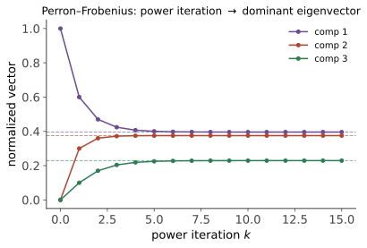

矩阵分析 III · 非负矩阵与 Perron–Frobenius
对标：Horn & Johnson §8 / Meyer §8 ｜ 前置：ma-01、本科随机过程 II–III、图论组合 III 元素非负的矩阵（转移阵、邻接阵、投入产出表）有一套超出一般理论的美好谱结构——Perron–Frobenius 定理：最大特征值是正实数、特征向量可取全正。它是 Markov 链平稳分布、PageRank、人口模型、经济投入产出的总后台。矩阵分析线在此收官。
1. Perron 定理（正矩阵情形）

定理（Perron 1907） \(A > 0\)（逐元素严格正），则： ① \(\rho(A)\) 本身是特征值（正实数）；② 对应特征向量可取逐元素严格正（Perron 向量）；③ \(\rho(A)\) 是单根，且是唯一模最大的特征值（其余严格小）；④ 幂法必收敛：\(\frac{A^k x}{\|A^kx\|} \to\) Perron 向量（任意 \(x > 0\) 起步）。
【骨架（Collatz–Wielandt 变分刻画路线）】 定义 \(r(x) = \min_i \frac{(Ax)_i}{x_i}\)（\(x \geq 0, x\neq0\)）：\(\rho = \max_x r(x)\)。① 紧性给最大点 \(v\)；② 若 \(Av \neq \rho v\)（某分量严格大），用 \(A(Av) > \rho\,(Av)\)（正性把"≥ 且一处 >"放大成"处处 >"——正性是引擎）与 \(r\) 的最大性矛盾 ⇒ \(Av = \rho v\)；\(v = \frac{1}{\rho}Av > 0\)（正矩阵乘非负非零向量严格正）；③④ 由"其余特征值的特征向量必有变号分量、模严格小于 \(\rho\)"（三角不等式取等条件的分析）。\(\blacksquare\)
Frobenius 推广（非负情形）：\(A \geq 0\) 不可约（关联图强连通——图论语言进场）：①② 保持（Perron 向量正、\(\rho\) 单根）；但模最大特征值可能有多个——恰为 \(h\) 个均匀分布在圆周上（\(h\) = 周期）；本原（不可约 + 非周期）时完全回到 Perron 结论。可约情形按强连通分量分块三角化逐块分析【引用】。
2. 总后台：一张定理服务四门课
| 应用 | 矩阵 | PF 兑现的内容 |
|---|---|---|
| Markov 链（随机过程 II/III） | 转移阵 \(P\)（行和 1 ⇒ \(\rho = 1\)，Gershgorin+行和） | 平稳分布 = \(P^\top\) 的 Perron 向量；不可约非周期 ⇒ 唯一且幂法收敛——遍历定理的线性代数证明；混合速度 = 第二特征值（谱隙——"\(\lvert\lambda_2\rvert\) 统治一切"的总出处） |
| PageRank（图论 III） | Google 矩阵 \(\alpha P + (1-\alpha)\frac{J}{n}\) | 阻尼项使矩阵严格正 ⇒ Perron 定理直接适用：排名唯一、幂法必收敛、且 \(\lvert\lambda_2\rvert \leq \alpha\) 给收敛速率——0.85 的工程选择 = 唯一性/速度/公平的三方折中 |
| 人口模型 | Leslie 年龄结构阵 | \(\rho\) = 长期增长率、Perron 向量 = 稳定年龄结构（增长与结构解耦） |
| 经济投入产出（Leontief） | 消耗系数阵 \(C\) | 经济可行（\((I - C)^{-1} \geq 0\)）⟺ \(\rho(C) < 1\)——Neumann 级数 \(\sum C^k\) 收敛（Gelfand, ma-01） |
读法："非负 + 强连通 ⇒ 唯一的正主方向"——凡是"系统的长期占比/排名/结构"问题，答案都是某个 Perron 向量；求它的算法都是幂法（数值 II）；收敛都看谱隙。一条定理在四个学科收租，是"结构决定谱"的最佳样板。
3. 谱隙与混合时间（定量补遗）
本原非负矩阵：\(\frac{A^k}{\rho^k} \to v w^\top\)（Perron 左右向量的外积——秩一极限），误差 \(\sim\big|\frac{\lambda_2}{\rho}\big|^k\)【骨架：Jordan 分解按模排序，次大块衰减主导】。Markov 语言：混合时间 \(\approx \frac{1}{1 - |\lambda_2|}\)（谱隙的倒数）——图的连通"瓶颈"越细，\(\lambda_2\) 越贴近 1，混合越慢（Cheeger 不等式把这句直觉定量化：谱隙 ⟺ 图的导通率【引用】——谱图理论的门牌，MCMC 诊断与社区发现共用）。
4. 练习与要点
例 1（PF 全套手算） \(A = \begin{pmatrix}0 & 1\\ 2 & 1\end{pmatrix}\)（非负不可约）：特征值 \(2, -1\)——\(\rho = 2\) 正实 ✓ 单根 ✓；Perron 向量 \((1, 2)^\top > 0\) ✓；\(|\lambda_2/\rho| = \frac12\) ⇒ 幂法每步误差减半。五分钟把定理四条全验一遍。
例 2（周期的反例） \(A = \begin{pmatrix}0 & 1\\ 1 & 0\end{pmatrix}\)（二部图/周期 2）：特征值 \(\pm1\)——模最大者两个 ✗ 幂法震荡不收敛——Frobenius 情形"非周期"条件的必要性；PageRank 的随机跳跃、Markov 链的"惰性化"（\(\frac{I+P}{2}\)）都是给周期打的疫苗。
例 3（Leontief 判可行） \(C = \begin{pmatrix}0.2 & 0.3\\ 0.4 & 0.1\end{pmatrix}\)：行和 \(< 1\) ⇒（Gershgorin）\(\rho < 1\) ⇒ 任何需求向量都有非负产出方案 \((I-C)^{-1}d = \sum C^kd\)——级数的每项都是"第 \(k\) 轮间接需求"：经济学含义与 Neumann 级数逐项对应。\(\blacksquare\)
优化与计算线十页完卷。剩余：信息与传输线（信息论进阶 3 + 最优传输 3）、几何与代数线（流形 4 + 代数拓扑 3 + 代数进阶 3）。